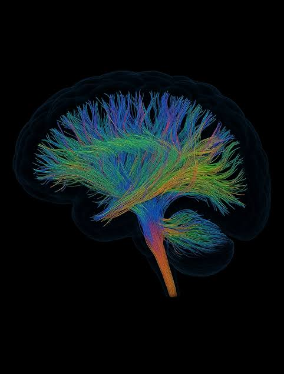
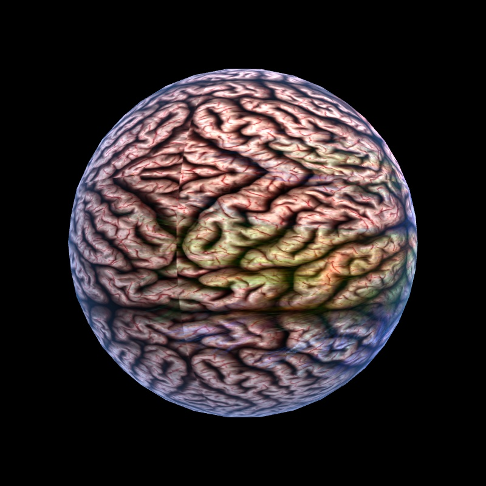

RCT4 视觉诊断
为什么这一幕「太丑」，以及把它拉回 Nature / Science 级 DTI 美学的逐条处方。结论先行：这不是「不够精致」，而是方向走反了。
先对齐：我们在看什么
三句话定位，确保后面的「丑」与「美」都落在同一坐标系上。
功能层心理学框架
在「神经层」与「现象层」之间建一个可计算的功能层，用 42 维状态向量 Ψ(t) 描述心理系统。网站是它的学院派知识入口，不是 SaaS 落地页。
1170vh 滚动叙事首页
Three.js r160 单文件应用，四幕结构对应 INTRE 三层架构。负责用 2–3 分钟建立心智模型，与 2D 静态官网并列。
「神经层」· 终幕永驻
进度 p∈[0.80,1.0]，永不淡出。视觉主体 = 程序化脑 + 42 条纤维束 + 三通道粒子，叙事是「42 维状态向下扎根进神经回路」。
你给的参考图 dti-reference.png 本身已经是顶级范式——纯黑场、半透明深蓝幽灵壳、壳内成千上万条方向编码的自发光纤维。问题不在审美标准，而在当前渲染把它做反了。下文所有判断都以这张图为锚。
看图：病因一眼可见
左是你 assets/ 里的参考图，右是 RCT4 当前实际渲染截图。同一颗「脑」，两种命运。


参考图的美全在纤维：发丝般细腻、在纯黑里自发光、按走向染方向色，皮层只是一圈淡到近乎透明的冷烟轮廓。当前渲染却把一张肉粉+黄绿的脑回 JPG 包在球上——球不像脑、像弹珠或一坨内脏；最值钱的彩色纤维被压到 35% 权重、几乎被皮层纹理盖没；没有黑场辉光、没有丝状结构，只剩边缘一圈廉价蓝紫菲涅尔。
实现去模拟「解剖皮层表面」，可顶级 DTI 的美学恰恰是「黑场 + 幽灵壳 + 内部自发光的方向编码纤维束」。参考图的灵魂（纤维）在渲染里被皮层贴图吃掉了。
方向编码色（DEC）—— 参考图为什么「对」
参考图不是随便上色，而是 DTI 的标准语法：纤维颜色 = 它的主走向。这是科学可视化里「颜色即信息」的典范，也是它高级感的来源。
而 RCT4 现在的「三通道色」是另一套语义（INTRE 自己的 UPLS/UNIS/UBMS 通道），且是低饱和大地色、粒子上限透明度仅 0.4——它和 DEC 不冲突，但不该用来替代 DEC 充当脑内纤维的主色。两套色板各司其职，才是正解。
顶级 DTI 的视觉语法
从 Wedeen 2012 在 Science 上那张「纤维几何网格」[6]，到 Human Connectome Project / Van Essen 2013 在 Nature 的 glass-brain tractography[7]，顶尖期刊封面收敛出三条铁律。
纯黑场 + 体积辉光
背景必须近纯黑，让纤维自发光。辉光不是装饰，是让「神经放电」可读的唯一手段——没有 Bloom，再亮的纤维也只是灰线。
真 3D 丝状纤维
美来自成千上万条有体积、有锥度、沿程发光的细丝，而非一张 2D 贴图。密度与方向编码色共同构成「织物质感」。
幽灵壳只勾轮廓
皮层/外壳是极淡的半透明冷烟，只做空气透视与边界，绝不抢戏。主角永远是壳内的纤维。
理想态愿景（矢量示意 · 含动效）
下面这张不是渲染截图，而是按上述三铁律手绘的目标态示意：黑场、呼吸的幽灵壳、四向 DEC 自发光纤维、沿束行走的琥珀信号点。它就是你该把 RCT4 拉去的方向。
病因清单（代码级定位）
全部基于 intre-3d-hero/pages/3d-hero.html 实测，行号可直接跳转。分级：致命 直接毁掉高级感；主要 明显拉低质感；次要 细节穿帮。
L1123–1164致命Bloom 后处理被整体禁用归档
EffectComposer / UnrealBloomPass 因「白色蒙皮」根因被注释并归档，场景无任何后期与色调映射。
所有发光感只能靠 AdditiveBlending 伪造，高亮区（电流、注光、接驳闪光）无法溢出辉光，终幕彻底失去「神经放电」的张力——这是「丑」的头号元凶。
brainMat3DL1586–1695致命全场景零 Light，脑是 unlit 伪光照
「光照」是 fragment shader 里写死的两路 diffuse（暖白主光 + 冷蓝填充），无高光、无阴影、无 AO、无环境反射。
材质本质是贴了图的发光球，体积感弱、塑料感强，跟参考图那种「光从纤维内部透出来」完全两回事。
L1697–1799致命脑是噪声变形的二十面体，非解剖模型
D33 计划要求 5k–20k 面 GLB 扫描脑，实际落地是 IcosahedronGeometry(1,6) + ridge noise 捏出的「似脑非脑」轮廓。
脑回是噪声脊线而非真实沟回，近看就是一颗凹凸不平的球，配肉粉贴图后「内脏感」拉满。
L1629–1638致命2D 矢状面 DTI 被球面投影「贴」满整颗脑
一张冠状/矢状 DTI PNG 经 atan/asin 球面投影包裹 3D 脑，皮层 JPG 再 ×2.5 平铺。
极点挤压畸变、projU 接缝、同一纤维图出现在所有朝向表面——解剖学无意义，近看纹理错乱，且把纤维降级成了「印花」。
L1849–1955主要42 条纤维是 WebGL 1px 细线
LineBasicMaterial 受 WebGL 限制无法设线宽，无锥度、无体积、无沿程发光梯度。
在 2× 放大的脑旁，42 条线纤细单薄，撑不起「白质纤维束」的叙事（项目自己已把体积替代列为 P2 待办）。
L1957–2062主要三通道粒子与 3D 脑坐标系脱节
120 条粒子曲线采样自已废弃的 2D brainSDF 三椭圆（z 仅 0.5–2.0），而脑 SX=8.5 且 scale 达 2.0。
粒子大概率悬浮在脑体之外或穿模，「三通道绕脑流动」在视觉上落空；叠加大地色 + 0.4 透明度，在深 Navy 上几乎看不见。
L1554, 1671主要电流/脉冲基于 UV 空间，与纤维无几何关联
电流是横扫脑面的水平亮带，脉冲环是 UV 平面圆（极点与接缝处畸变）。
「电流沿纤维传导」只是错觉，亮带和 42 条纤维各跑各的，叙事与画面脱钩。
L2333–2335主要配色克制到发闷，色温单一
三通道大地色低饱和、粒子上限透明度 0.4；脑主体由灰蓝皮层纹理主导。
整幕偏冷灰、缺层次与焦点色，压轴幕没有「视觉高潮」。
scene次要无雾、无大气纵深
纵深仅靠 depthTint 暖冷微调，脑远侧与背景缺乏空气透视融合，画面「贴」在屏幕上。
applyScene次要终幕主体静态 + 光晕廉价 + 配置遗留
脑稳态后无自转/呼吸（仅相机视差 ±12°）；aura 是单色 Navy400 菲涅尔壳（opacity .35）作 Bloom 平替，生硬；preserveDrawingBuffer:true 仍在，白耗显存带宽。
L1902–1905次要纤维靶点用了 Math.random()
与紧邻注释「确定性 PRNG 避免逐帧抖动」矛盾，每次刷新纤维布局不同，构图不可控、不可复现。
处方：能直接动手的改法
每条都给到 shader 片段 / 参数 / 行号定位，按「先救命、再提质、后打磨」排序。
把 Bloom 救回来（修根因，不要绕过）
致命L1123–1164 + archive/2026-07-24/bloom-disabled/threshold≈0.85、strength≈0.6、radius≈0.4，并加 ACESFilmic 色调映射 + outputColorSpace=SRGB。翻转主角：纤维做主体，皮层降为幽灵壳
致命brainMat3D 中 DTI 权重 0.35 / 皮层 ×2.5 平铺用 DEC 方向编码色重染脑内纤维
致命abs(normalize(tangent)) 映射到 RGB（红=左右、绿=前后、蓝=上下），脑干束强制橙红；保留 INTRE 三通道色仅用于「接驳/注光」叙事瞬间，二者分时不混色。给纤维真体积：管状/带状几何 + 沿程发光
主要L1849–1955 的 THREE.LineTubeGeometry/MeshLine 或 instanced 带状 quad 替代 1px 线，加锥度（脑端细、节点端略粗）与沿程 alpha 梯度；条数从 42 提到 200–600 并用 instancing 控性能。换真解剖脑模型（或至少修投影）
主要L1697–1799 程序化几何 + L1629 球面投影把电流/脉冲绑到纤维几何上
主要L1554, 1671 UV 横带 / UV 圆修粒子坐标系 + 提对比
主要L1957–2062 采样自 2D brainSDF加空气纵深 + 终幕呼吸 + 收尾配置
次要L1129FogExp2 让脑远侧融入黑场；稳态后给脑 4–6s 极慢呼吸 + 微自转；aura 改多层渐变壳；移除 preserveDrawingBuffer:true；纤维靶点 Math.random() 换确定性 PRNG。落地路线：三刀见效
不必一次全做。按下面三阶段，第一阶段就能让 RCT4 脱胎换骨。
选择性 Bloom + 翻转主角 + DEC 重染
对应 RX-01 / 02 / 03。不动几何、不换模型，纯材质与后期调整，即可把「灰内脏球」变成「黑场里透光的纤维脑」。
纤维体积化 + 信号绑几何 + 粒子归位
对应 RX-04 / 06 / 07。让纤维有织物感、信号真沿回路走、三通道真绕脑流。叙事与画面彻底合一。
真解剖模型 + 纵深呼吸 + 配置收尾
对应 RX-05 / 08。导入扫描脑、加雾与呼吸、清掉遗留配置，达到可上期刊封面的完成度。
速查对照表
| 处方 | 级别 | 阶段 | 动到的代码 | 核心动作 |
|---|---|---|---|---|
| RX-01 | 致命 | A | L1123–1164 | 选择性 Bloom + ACES 色调映射 |
| RX-02 | 致命 | A | brainMat3D | 皮层降为幽灵壳，纤维做主角 |
| RX-03 | 致命 | A | 纤维着色 | DEC 方向编码色重染 |
| RX-04 | 主要 | B | L1849–1955 | 管状/带状纤维 + 沿程发光 |
| RX-05 | 主要 | C | L1697–1799 | 真解剖 GLB / 停球面投影 |
| RX-06 | 主要 | B | L1554,1671 | 电流/脉冲绑纤维几何 |
| RX-07 | 主要 | B | L1957–2062 | 粒子归 3D 脑空间 + 提对比 |
| RX-08 | 次要 | C | scene / L1129 | 雾 + 呼吸 + 清配置 + 确定性 PRNG |
RCT4 的「丑」不是细节没磨，而是把参考图里最贵的东西（自发光纤维）做成了最便宜的东西（球面贴图印花）。先做 Phase A 的三刀——选择性 Bloom、翻转主角、DEC 重染——你大概率会在不改一行几何的情况下，看到它从「太丑」跳到「有点东西」。剩下的，是把「有点东西」推到「能上封面」。
诊断基于本地代码 intre-3d-hero/pages/3d-hero.html（2587 行）与 assets/ 实测；顶级范式参考见文末来源。本文档为视觉升级 brief，未改动任何项目源码。